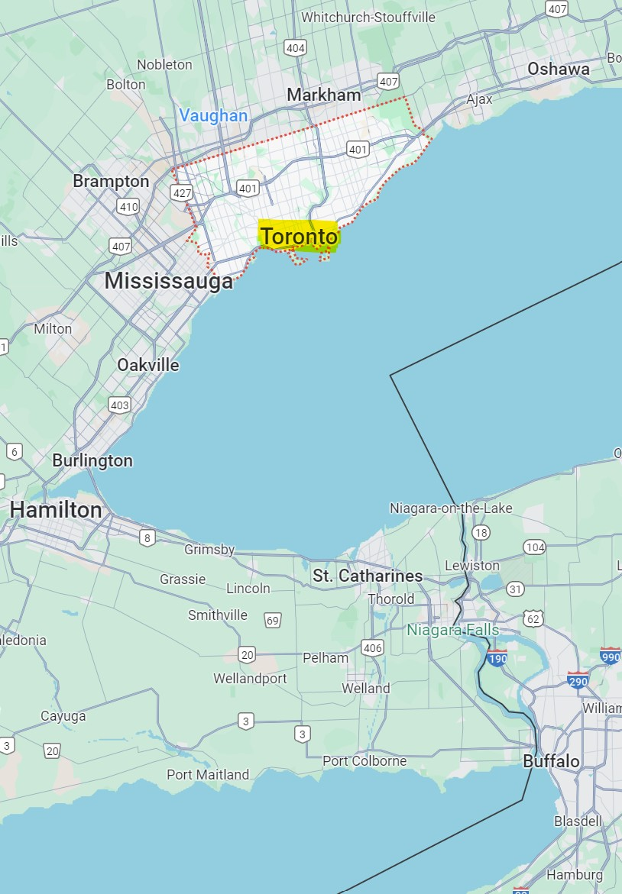

Welcome to Toronto!
Toronto is located in the southeastern part of Canada, making it a prime location for getaway between Canada and the United States.
Only a 3 hour drive from Rochester, Toronto is a vibrant city brimming with exciting activities and cultural experiences.
The city's geographic position contributes to its diverse climate, featuring 4 distinct seasons, with warm summers and cold winters.
From the iconic CN Tower to the bustling streets of Yonge-Dundas Square, there's always something new to discover.
Enjoy world-class arts, explore lush green spaces, and indulge in culinary delights from around the globe.
Whether you're a local or a visitor, Toronto's dynamic spirit and welcoming atmosphere invite you to experience all that this remarkable city has to offer.
Welcome to my guide to some of the highlights Toronto has to offer! While this site doesn't cover everything, I've included a few of my top recommendations.
If you're planning a visit, I definitely encourage you to do further research to discover all that Toronto has in store for you.